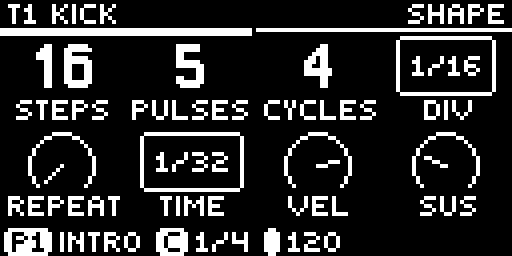
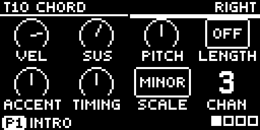
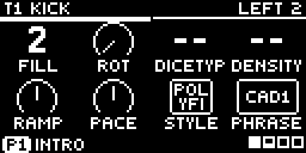
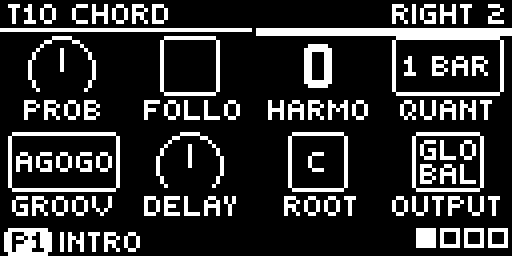
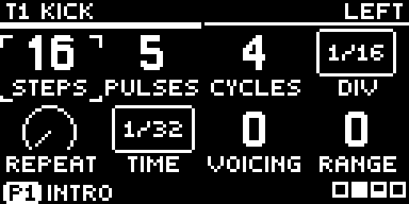
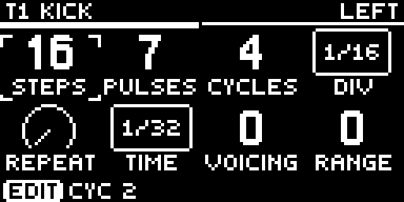
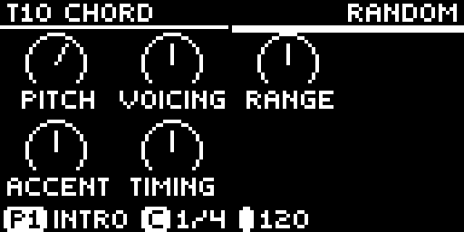
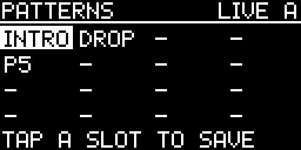
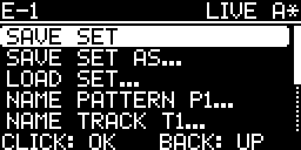

Move E-1
E-1 is a 16-track Euclidean sequencer for Ableton Move. It runs under Schwung and plays Move's own tracks, a computer over USB-C, or both.
Install
Download e1-module.tar.gz from the releases page and copy it to Move:
scp e1-module.tar.gz ableton@move.local:/tmp/
ssh ableton@move.local 'cd /data/UserData/schwung/modules/tools && tar xzf /tmp/e1-module.tar.gz'Restart Schwung. E-1 is under Tools.
First pattern
Each track spreads a number of pulses as evenly as it can over a number of steps. You set the two numbers, and E-1 places the hits.
- Put a drum rack on a Move track that listens to MIDI channel 1. Open E-1 from Tools and press Play. Tracks 1 to 4 play kick, snare, hat and clap on notes 36 to 39.
- Tap the first track pad to select the kick. The step row shows its hits.
- Turn knob 2 (Pulses) for more or fewer hits. Turn knob 1 (Steps) for the loop length.
- Touch knob 4 (Div). The bottom pads show every division. Tap one.
- Tap steps on the step row to add or remove single hits.
- Press Capture, then tap a bottom pad. The pattern is saved in that slot.
The surface
| Control | What it does |
|---|---|
| Top 16 pads | Tracks 1 to 16. Tap to select. Tap the selected track to hear one hit of it. Hold several and your edits apply to all of them. |
| Step row | The selected track's hits. Tap to toggle a step. Shift + step edits that step alone, in every cycle or in the cycle you are editing. |
| Bottom 16 pads | The values of the last knob you touched, or the layer of a held left button. |
| Knobs 1 to 8 | The current page. Shift gives each knob's second function. |
| Jog wheel | Turn: page. Click: home. Shift + turn: tempo. |
| Left buttons | Pattern, Cycles, Random, Perform. Hold to use. Press twice to keep up, once more to let go. |
| Mute | Hold and tap track pads. Press twice to keep it on. |
| Sample | Temp: try changes, let go to undo them. |
| Loop | Freeze: repeat the last steps. |
| Capture | Save a pattern: press, then tap a slot. |
| Copy, Delete | Hold with pads to copy or clear tracks, patterns, cycles and steps. |
| Undo | Step back. Shift + Undo: redo. |
| Left, Right | Steps 17 to 64. Shift: rotate the track. |
| Plus, Minus | Page the bottom pads, or move the keyboard an octave. |
| Play | Start and stop. Shift + Play: clock source. |
| Menu | Save, load, new set, rename, settings. Shift + Menu: output. |
| Back | Step out of whatever is open. Hold: switch to Move, E-1 keeps playing. Shift + Back: quit E-1. |
To come back after holding Back, open E-1 from the Tools menu or use Schwung's Tools shortcut.
Screen and lights


The header shows the track and the page. The footer shows the pattern on the left and the track's cycles on the right. The knob you last touched has corner marks. Turning a knob with named values, such as Div or Scale, shows the whole list.
| Light | Means |
|---|---|
| Track pads | Selected: bright orange, or cyan for a CC track. Other tracks: the same colour, very dim. Muted: off, or grey when selected. A track flashes white when it plays. |
| Step row | Hits in the track's colour, the playhead white. Red: a hit with its own values. Yellow, while you edit a cycle: a step with its own values in that cycle. Hold Shift to see every step with its own values. Pink while Random or Delete is held: a retrigger step. |
| Knob LEDs | Knobs 1 to 4 grey, 5 to 8 orange, like the two rows on screen. The last one touched is brighter. |
| White | The current value, the playing cycle or pattern. |
| Orange | Amounts, notes in the pool. |
| Grey | Choices not chosen. |
| Blue | Triplets, black keys, scales, saved patterns. Bright blue: patterns in the chain. |
| Yellow | The song's scale and root. Steps edited in the cycle you are editing. |
| Green | Bars for Length and Quant. Dark green: styles, grooves, phrases. |
| Pink | Modifier pads at the end of a row: octave, Fit, phrase rate, swing grid, Choke or Tail. |
| Red | Edited cycles and steps. Tracks waiting to be muted. |
Knob pages
Turn the jog wheel to switch between Left and Right. CC tracks add two more pages, CC A and CC B. Hold Shift for the second row of names.


Left
| Knob | Name | What it does | Shift |
|---|---|---|---|
| 1 | Steps | Loop length, 1 to 64 steps. | Fill: how many extra hits the track gets while the Fill perform pad is held. |
| 2 | Pulses | Number of hits. | Rotate: shifts the hits along. |
| 3 | Cycles | How many cycles the track plays in turn, 1 to 16. | DiceTyp: the kind of line the Notes dice make, 1 to 16. Low is wide, high is tight. |
| 4 | Div | Step length: straight, triplet or dotted. | Density: how many of the hits sound, 16 is all of them. |
| 5 | Repeats | Repeats after each hit, 0 to 48, or INF until the next hit. | Ramp: velocity change per repeat. |
| 6 | Time | Gap between repeats. | Pace: gaps grow or shrink. |
| 7 | Voicing | Inverts the chord or adds octaves. | Style: PolyFix, PolyRamp, PolyClimb, MonoFix, MonoRamp, MonoClimb, Dice. |
| 8 | Range | How far Phrase moves the pitch, in scale steps. | Phrase: the shape of that movement. |
Poly styles play the whole pool as a chord. Mono styles play one pool note per hit in turn. Climb walks through the inversions hit by hit.
Right
| Knob | Name | What it does | Shift |
|---|---|---|---|
| 1 | Vel | Velocity, 1 to 127. | Prob: above zero drops single notes, below zero drops a hit with its repeats. |
| 2 | Sustain | Note length. 50 is one step. | Follow: Off, Bass, Chord or Arp. See Harmony. |
| 3 | Pitch | Moves the pool in scale steps. | Harmony: moves one pool note per click. |
| 4 | Length | Bars before the track starts over, or Off. | Quant: when a queued or chained pattern starts. |
| 5 | Accent | How much Groove changes velocity. | Groove: a velocity shape over 16 steps. |
| 6 | Timing | Swing. | Delay: shifts the whole track by up to half a step. |
| 7 | Scale | Song, or one of 17 scales. See Harmony. | Root: Song, or C to B. |
| 8 | Chan | MIDI channel. | Output: Global, Move, Computer or Both. |
On a CC track, knob 1 is Send (Pulse, Change or Glide) and knob 2 is Slew, the glide speed. Knobs 3, 5 and 7 are unused. On CC A and CC B, knobs 1 to 8 are CC lanes 1 to 16. A lane is Off until you turn it up. Shift + knob sets the lane's CC number.
Settings
Open it from Menu. Back leaves. Settings has two pages. Turn the jog wheel to switch. The Set page (header E-1 SET) holds what belongs to the whole set. The Track page (header names the track) holds settings of the selected tracks.
| Knob | Set page | Track page | Track page, Shift |
|---|---|---|---|
| 1 | Dest: where tracks play, Move, Computer or Both. | Type: Note or CC track. | Rnd: chance that random amounts apply. |
| 2 | Clock: Move, Internal or Computer. | Repeat: Choke, a new hit cuts the last one. Tail: they overlap. | Rate: how often random values change. |
| 3 | Tempo: internal tempo, 20 to 300 BPM. | PhrRate: phrase length, x1 is 4 bars, x2 is 2, /2 is 8. | Grid: swing on single steps, pairs or fours. |
| 4 | ClkOut: send MIDI clock to the computer. | Follow: Off, Bass, Chord or Arp. See Harmony. | Loop: Free, or 1, 2, 4 or 8 bars after which chance and random values repeat. |
| 5 | Quant: when a queued or chained pattern starts. | Split: Off, or a track. See Harmony. | AutoRol: Off, or new dice every 1, 2, 4 or 8 bars. |
| 6 | SongRoot: the song's root note. | Mute: On or Off. | Source: how random amounts move. See Shapes. |
| 7 | SongScale: the song's scale. | Dir: Forward, Backward, Pendulum or Random. See Time. | Warp. See Time. |
| 8 | ChordTrk: Off, or the chord track 1 to 16. | DiceLen: the Lengths dice, On or Off. | Jitter. See Time. |
Harmony
Song root and scale. A set has one root and one scale, C minor in a new set. A track whose Scale or Root says Song plays in the song's key. Pitched tracks in Init and the starter sets use Song, so changing the song moves them all. A track with its own scale or root keeps it.
Set the song on the Settings Set page, or from any track: touch Scale (Right page, knob 7) and hold Shift while you tap a scale pad. Shift + knob 7 shows the root keyboard; hold Shift and tap a key to set the song root. The selected track keeps its own setting.
On the Scale and Root pads, white is the track's choice, yellow is the song's, and the yellow pad at the lower right picks Song. With Song chosen the knob reads SONG and the list shows what it stands for, for example S:MINOR. The list footer names the song key.
Scales: Chrom, Major, Minor, Penta, Hira, Iwato, Tetra, Dorian, Phryg (Phrygian), Lydian, Mixo (Mixolydian), Locri (Locrian), HarMin (harmonic minor), MelMin (melodic minor), Blues, MinPen (minor pentatonic), Whole (whole tone). Plus and Minus page the scale pads.
Chord track. Set ChordTrk on the Settings Set page. Its pool, moved by its own Pitch and Harmony in each cycle and step, is the current chord. Its pad lights blue.
Follow. Shift + knob 2 on the Right page (or Follow on the Settings Track page) sets what a note track takes from the chord track:
- Off: the track plays its own pool.
- Bass: the chord's lowest note, in the octave of the track's own lowest pool note.
- Chord: the whole chord in that octave, shaped by the track's Voicing and Style.
- Arp: one chord note per hit, walked by the track's Style and Phrase. Poly styles play as their Mono form. Rolled Notes dice pick the chord notes.
Tracks that follow light green, and the footer shows the role, for example BASS OF T10. With ChordTrk Off, or an empty or CC chord track, every track plays its own pool.
Split. Split on the Settings Track page sends every second hit of the track out on another track's channel and output. Tap Split's pads to pick the track, tap it again for Off.
Bottom pads
Touch a knob and the bottom pads show its values. Tap a pad to set one. Plus and Minus page through longer lists.
| Knob | Pads |
|---|---|
| Div, Time | Upper row: 1/1 to 1/64 and 1/4 dotted. Lower row: dotted 1/8 and 1/16, then triplets. Div only: the pink pad at the lower right turns Fit on and off. |
| Source | Random purple, Drift cyan, RampUp green, RampDn yellow, Tri orange, Square blue. The choice is white. Lower right, pink: new dice for the track. |
| Pitch | A one-octave keyboard, black keys above. Tap a key to add it to the pool or take it out. Shift + key only plays it. The end pads change octave and light up when the pool has notes that way. The footer shows the octave and the pool notes in it. Up to 8 notes. |
| Root | The same keyboard. Tap the root. |
| Style, Phrase, Groove | One pad per shape. The purple pad is Dice. The Phrase end pads set PhrRate. |
| Density | Pads 1 to 16. Hits that Density takes out stay dim on the step row. |
| Repeats | 14 counts per page. Upper right: Choke or Tail. Lower right: INF. Delete lights up while repeats run. Press it to stop them. The next hit starts new ones. |
| Length | One pad per length. Lower right, pink: jump to a random start point. A tap on Delete does the same. Shift + the pink pad puts the track back in line with the bar. |
| Rate, Loop | One pad per value. Lower right, pink: new dice for the track. |
| Signed values | Lower row jumps to minimum, half, quarter, zero, quarter, half, maximum. Upper row nudges by 5, 2 and 1. |
| Other values | A bar up to the value, or one pad per option. |
Tracks and mutes
- Tap the selected track's pad to hear one hit of it: its notes at its velocity, or a CC track's lane values. It sounds while you hold the pad, also when the transport is stopped or the track is muted.
- Hold Mute and tap track pads. The pads turn red and the mutes apply together when you let go.
- Press Mute twice to keep it on. Track pads then mute at once. Press it again to leave.
- Copy + two track pads copies the first track onto the second. Name, type, channel, output and mute stay.
- Delete + track pad clears the track's hits and edits.
Cycles
A cycle is one pass through a track's steps. A track plays its cycles in order, then starts again. Each cycle is the same as the track until you edit it.
The boxes in the footer are the selected track's cycles. Filled: playing now. Half filled: has its own edits.


- Turn Cycles (Left, knob 3) to set how many there are.
- Hold Cycles. The bottom pads show them: white is playing, red is edited.
- Tap a cycle. The track loops it and the screen says EDIT. Let go of the button.
- Turn knobs, tap value pads or tap steps. Only that cycle changes.
- Press Cycles once. The track plays all its cycles again.
- To edit several cycles together, hold one cycle pad and tap others.
- With Cycles held: Shift + pad sets the count, Copy + two pads copies, Delete + pad clears.
- Delete + touch a knob clears that knob's edits in every cycle.
Single steps
Any step can have its own values, for example more repeats on one hit.
- Hold Shift and tap a step. It becomes a hit if it was empty and lights white.
- Keep Shift held and tap more steps to edit them together.
- Turn knobs or tap value pads. Only those steps change.
- Press Back.
Values that shape the whole track stay per track: Steps, Pulses, Rotate, Div, Length, Timing, Fill and Density. Edited hits show red. An edited step without a hit looks like any empty step. Hold Shift to see all edited steps in red.
Steps in one cycle
Edit a cycle first: hold Cycles, tap a cycle, let go. Then hold Shift, tap steps and turn knobs as above. The footer shows the steps and the cycle, for example STEP 5 C2. The new values play in that cycle only. In that cycle's view the step lights yellow.
A step plays the first value it finds: its value in this cycle, then its value for every cycle, then the cycle's value, then the track's.
Delete + an edited step clears its values. While you edit a cycle it clears the step's values for that cycle and for every cycle. A track holds 32 edited steps: a step edited for every cycle counts once, and once more for each cycle it is edited in.
CC tracks
On a CC track, pick steps the same way and turn a lane knob on the CC A or CC B page. The lane sends that value on those steps only, in every cycle or in the cycle you are editing. With Send at Pulse the value goes out on the step. With Change it goes out when it differs from the last one sent. With Glide the lane slides to it at the Slew speed. Turn on a lane before you give it step values.
Retrigger steps
Hold Random and tap a step to mark it. Each time the track reaches a marked step, its random values, groove, phrase and style start again from there, so they line up with the pattern. Marked steps show pink while Random or Delete is held. Hold Random and tap the step again to remove the mark.
Random
Hold Random and turn a knob to set how far its value wanders, from -100 to +100.

- Random + jog wheel sets the chance that the amounts apply. Add Shift for the rate.
- The variation repeats each time round. The New dice perform pad picks a fresh one.
- Delete + Random clears the selected tracks' amounts.
Loop
Loop makes a track's chance and random values repeat. Hold Random and press Plus or Minus to choose Free, 1, 2, 4 or 8 bars. The footer shows the setting while Random is held. With Free, Prob and the random amounts that follow Rate give new results all the time. With a loop, the same results come round every 1, 2, 4 or 8 bars.
- Random + jog click rolls new dice for the track. The screen says REROLL. With a loop set, the new results repeat from then on.
- The pink pad at the lower right of the Loop and Rate pads rolls new dice too.
- Loop is also on the Settings page: Shift + knob 4.
Dice
Dice write a new 16-step line for one part of a note track and leave the other parts alone. Hold Random, or press it twice to latch it, and take your fingers off the knobs. The upper row of the bottom pads becomes the dice.
| Pad | Colour | What it rolls |
|---|---|---|
| 1 | Orange | Notes: which note of the pool each step plays. Style changes to Dice. |
| 2 | Red | Accents: strong, plain and soft steps. Groove changes to Dice. Accent sets how strong. |
| 3 | Green | Lengths: short, medium, long and tied notes around Sustain. DiceLen turns On. |
| 4 | Blue | Octaves: octave jumps inside Range. Phrase changes to Dice. |
| 5 | Cyan | Rhythm: which hits Density takes out. |
| 7 | Purple | All five at once. |
| 8 | Pink | Back: the roll before this one, up to four rolls back. |
- A pad is bright while its line plays and dim while it does not. The screen names the line you rolled.
- Each line repeats every 16 steps. Mark a retrigger step and the lines start again there.
- Choose another Style, Groove or Phrase and that part plays as before. Choose Dice in the list to bring the line back.
- With Random latched, hold Delete and press a dice pad to clear that line. Delete + pad 7 clears all of them.
- Rolling Accents with Accent at 0 sets Accent to 60. Rolling Octaves with Range at 0 sets Range to one octave. Rolling Rhythm with Density at 16 sets Density to 12.
- With one note in the pool, the Notes dice play that note and the two scale notes above it. Voicing adds more notes.
- On a CC track only Rhythm, All and Back work.
- Hold track pads first to roll for several tracks at once.
Dice type
Shift + knob 3 on the Left page (DiceTyp) shapes the Notes line, 1 to 16. Low values jump across the whole pool and across octaves. High values stay near the lowest note and repeat notes. Turning it changes the line you rolled step by step. It does not roll a new one.
Density
Shift + knob 4 on the Left page (Density) sets how many of a track's hits sound. 16 plays them all, 8 plays half, 0 plays none. The same hits drop out every time round, the weakest beats first. Roll Rhythm to choose another order. Density works on drum and CC tracks too, and Fill still adds its hits.
Auto roll
Auto roll rolls new dice by itself. Hold Random and tap a pad in the lower row: Off, 1, 2, 4 or 8 bars. Shift + Random + Plus or Minus steps through the same values. Only lines you rolled by hand at least once get new dice. The footer shows AUTO while Random is held. The pink pad at the lower right rolls the track's random values, as Random + jog click does.
Shapes and time
Shapes
Source sets how a track's random amounts move. Hold Random and press Left or Right to step through the sources. The footer shows SRC while Random is held. Random + Shift + knob 3 on the Left page shows one pad per source.
- Random: a new value at each Rate step, with the chance set by Random + jog wheel.
- Drift: a slow, smooth wander. Rolling new dice gives a new wander.
- RampUp, RampDn, Tri, Square: each amount follows the shape, sampled at Rate.
A shape runs once per Loop when Loop is set. With Loop at Free it runs once through all the track's cycles, cut short by Length. Steps, Pulses, Rotate, Pitch and Harmony change once per cycle, so they follow the shape from cycle to cycle. The shapes ignore the chance.
Time
Hold Random and use the Left page knobs that take no random amount:
- Knob 3, Jitter, 0 to 100: on each step, with that chance, the playhead skips a step ahead, plays the step again or steps back, and carries on from there. It starts fresh with each cycle. With Loop set the same jumps come round every loop.
- Knob 4, Warp, -100 to +100: positive values start slow and speed up, negative values start fast and slow down. The cycle keeps its length. Edit it per cycle for a bouncing-ball fill.
- Shift + knob 4, Fit: the track's steps are spread evenly over its Length, or over one bar when Length is Off. 5 steps then play a true 5 against 4. Each cycle lasts the Length. Division is ignored and reads FIT. The pink pad at the lower right of the Div pads does the same.
Dir on the Settings Track page (knob 7) sets the way the playhead walks: Forward, Backward, Pendulum (there and back without playing the ends twice) or Random (a random step each time, the same order every loop when Loop is set). Mono styles walk their notes down while the playhead runs backwards. The Reverse perform pad flips whichever way the track runs.
Source, Warp and Jitter are also on the Settings Track page, with Shift on knobs 6, 7 and 8.
Perform, Freeze, Temp
Perform
Hold Perform and hold a pad. Shift + pad keeps a move on, tap it again to stop. Hold track pads first to limit a move to those tracks. Shift + Perform stops every move.
- Upper row
- Fill · Ratchet 2 · Ratchet 3 · Ratchet 4 · Half time · Double time · Reverse · Accent
- Lower row
- Freeze 1 · Freeze 2 · Freeze 4 · Freeze 8 · Solo · Restart · Rotate +1 · New dice
Solo keeps only the held tracks. Rotate +1 changes the track, and Undo takes it back.
Freeze
Hold Loop and the last 4 steps repeat. While it is on, tap a step to set how many steps repeat, and tap track pads to take tracks in or out. Hold track pads before pressing Loop to freeze only those. Press Loop twice to keep the freeze, once more to stop.
Temp
Hold Sample and change anything. Let go and the tracks are back as they were. Press it twice to keep Temp on, once more to undo. Capture keeps the changes. Mutes changed under Temp come back too.
Patterns, sets, menu
A pattern holds all 16 tracks. A set holds 16 patterns.


- Save: press Capture, tap a slot. Back cancels.
- Play: hold Pattern and tap a slot. It starts at the next Quant line. Tap again to switch at once.
- Chain: hold Pattern, hold the first slot and tap the others in order. Each pattern plays for its Length (the longest track Length, else its Loop, else one bar), rounded up to whole Quant lines, then the next starts. After the last the chain starts over. Chained slots light bright blue, the playing one white, the next one blinks. While Pattern is held the footer shows the chain, for example CHAIN 1>3>2. Tap a single slot to end the chain. The chain is saved with the set.
- Copy + two slots copies. Delete + slot clears.
Menu has six rows. Jog to move, click to choose, Back to step up.
- Save
- Saves the set.
- Save as
- Saves under a new name.
- Load
- Opens a set. Delete + click deletes one.
- New
- Starts a set from Init (all tracks empty), Drums, Drums Bass Chords or Generative.
- Rename
- The selected track, the playing pattern or the set.
- Settings
- The Settings page.
Move or computer
Move: notes go to Move's tracks by channel, 1 to 4.
Computer: notes go out over USB-C as Ableton Move (Standalone Port). Set each instrument to the channel of its E-1 track.
Both: both. Each track's Output can override this.
Move: E-1 follows Move's transport.
Internal: E-1 keeps its own tempo. ClkOut sends MIDI clock to the computer.
Computer: Move follows the computer and E-1 follows Move. Turn on MIDI clock sync in Move's settings. E-1 warns until you do.
Choosing an output also sets a matching clock. Changing the clock stops playback.
Web page
With E-1 open, go to http://move.local:7700/remote-ui#tool on a computer or phone on the same network. The page shows:
- The set name and the names of the saved patterns.
- For each track: name, type, channel, output and mute.
- For CC tracks, the CC number of each of the 16 lanes (button CC).
- The song root, song scale and chord track.
A change reaches the Move as soon as you leave the field. Changes made on the Move show up on the page.
Saving and undo
E-1 keeps the live state and comes back to it next time. A set file changes only when you save it. Files are in /data/UserData/schwung/e1/.
Undo steps back up to 24 times. Shift + Undo redoes what you undid. A new edit clears the redo steps. Loading a set clears the history.
E-1 ignores incoming MIDI notes.